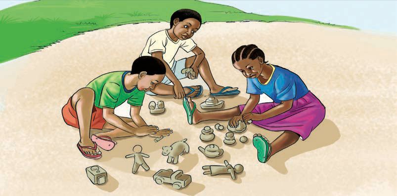

Kazi ya kufanya namba 3
Andaa na onesha onyesho la matendo ya kusalimiana katika jamii za Watanzania.
Watu hufanya matendo tofauti katika kusalimiana katika jamii kulingana na tamaduni zao. Matendo haya katika kusalimiana yamejengwa katika misingi ya utu, upendo na heshima kwa watu wengine.
Kushirikiana
Misingi ya tamaduni za jamii za Watanzania ilisisitiza ushirikiano na watu wengine. Ushirikiano ulisisitizwa katika jamii ili kuongeza ufanisi katika utendaji wa shughuli mbalimbali katika jamii. Miiko, misemo na methali kama kidole kimoja hakivunji chawa ilitumika kusisitiza ushirikiano katika jamii zetu (chunguza Kielelezo namba 2). Jamii zilishirikiana katika mambo ya kiuchumi na kijamii, bila kujali hali ya mtu. Utu na upendo vilizingatiwa ili kukuza nguvu ya kushirikiana na kuhusiana katika jamii.
Kielelezo namba 2: Watoto wakishirikiana kutengeneza maumbo